Identity preservation
Maintains reference identity through anchored latent decomposition and guided editing.
Explore identity-preserving multimodal affective control through structured latent geometry.
Controlla models affective edits as structured movement in latent space. It preserves source identity while applying expressive changes from text, audio, and reference-based control.
Maintains reference identity through anchored latent decomposition and guided editing.
Combines text, audio, and visual cues to produce expressive but consistent outputs.
Uses latent graph constraints to keep transitions smooth and semantically meaningful.
Designed for reference-grounded affective control evaluation with AffectHuman-43K.
Gallery examples from the Controlla prototype. Figures are drawn from the data folder and renamed sequentially to match page usage.
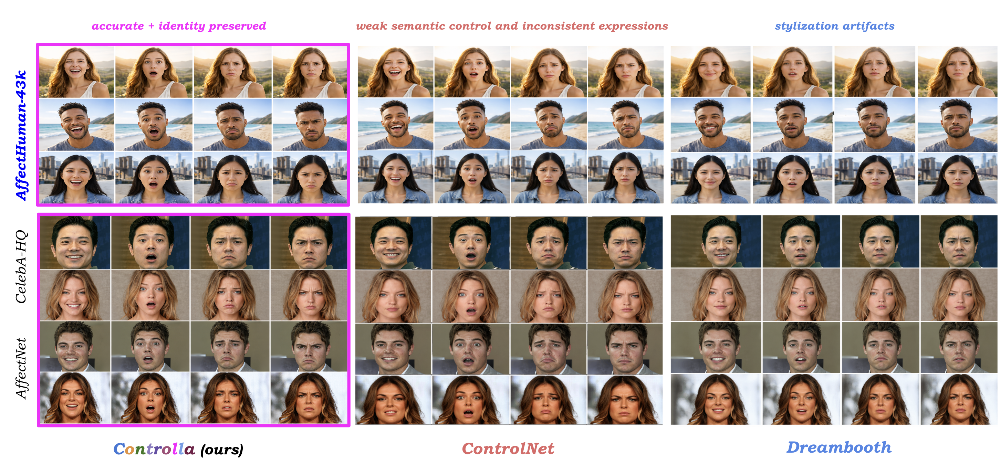
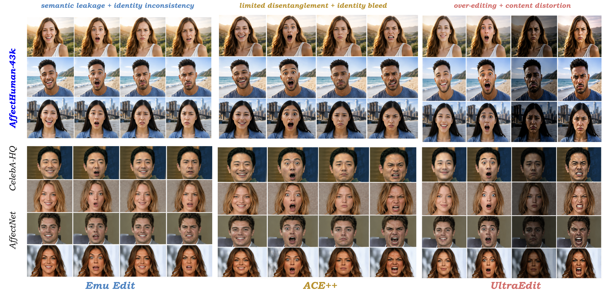
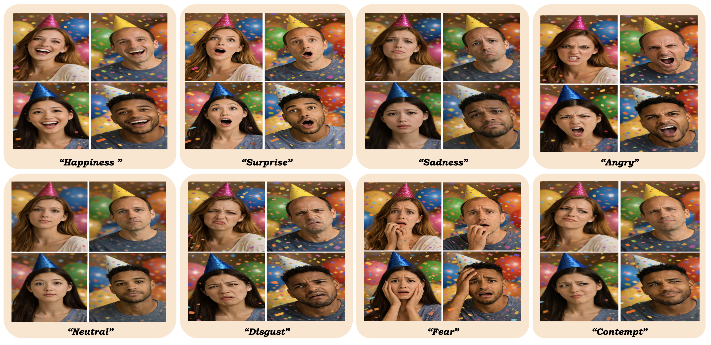
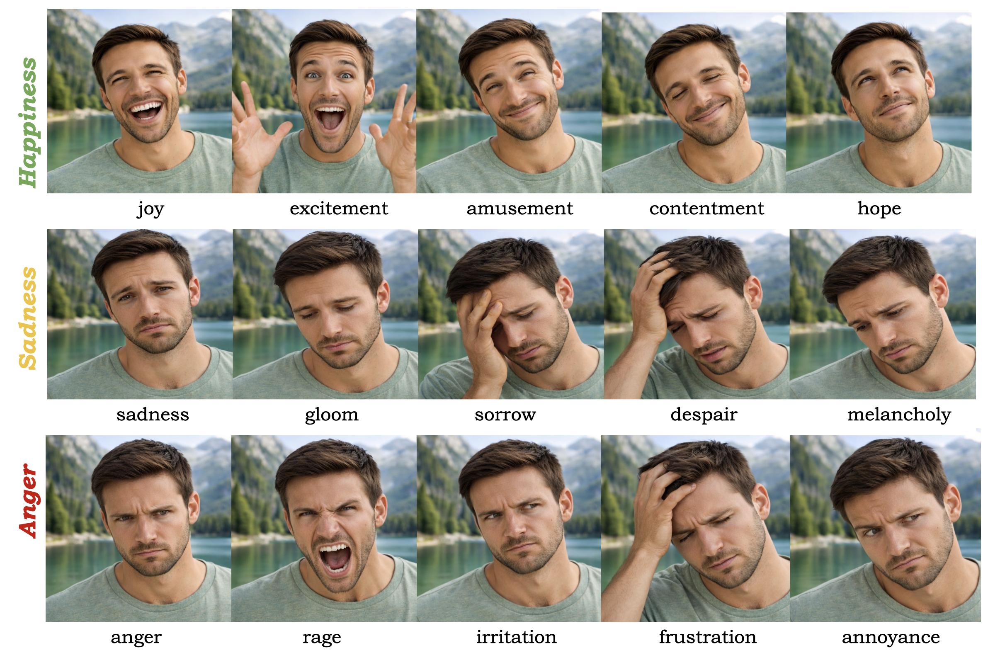
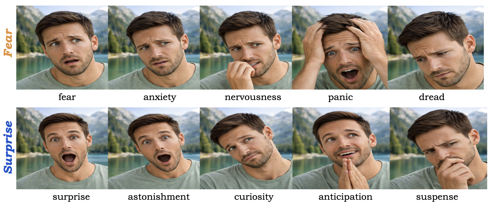
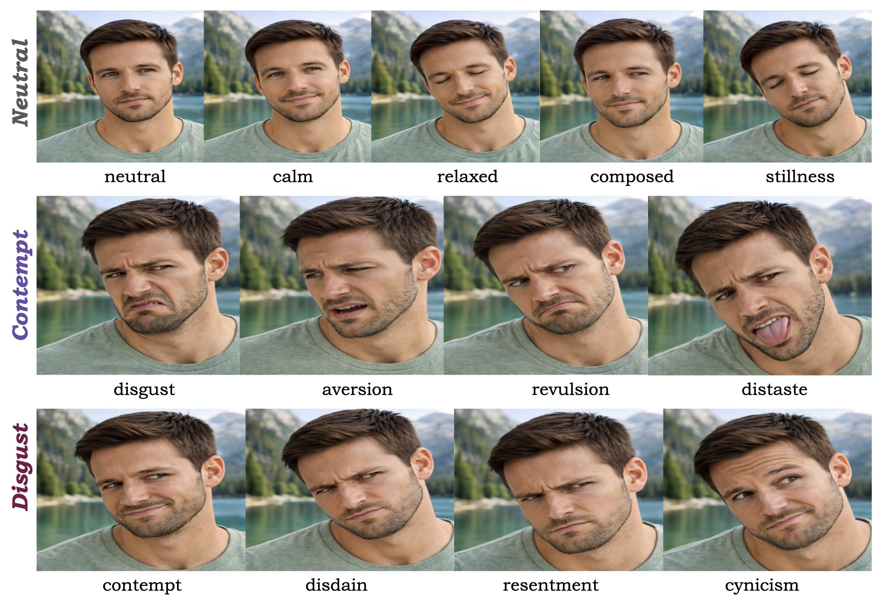
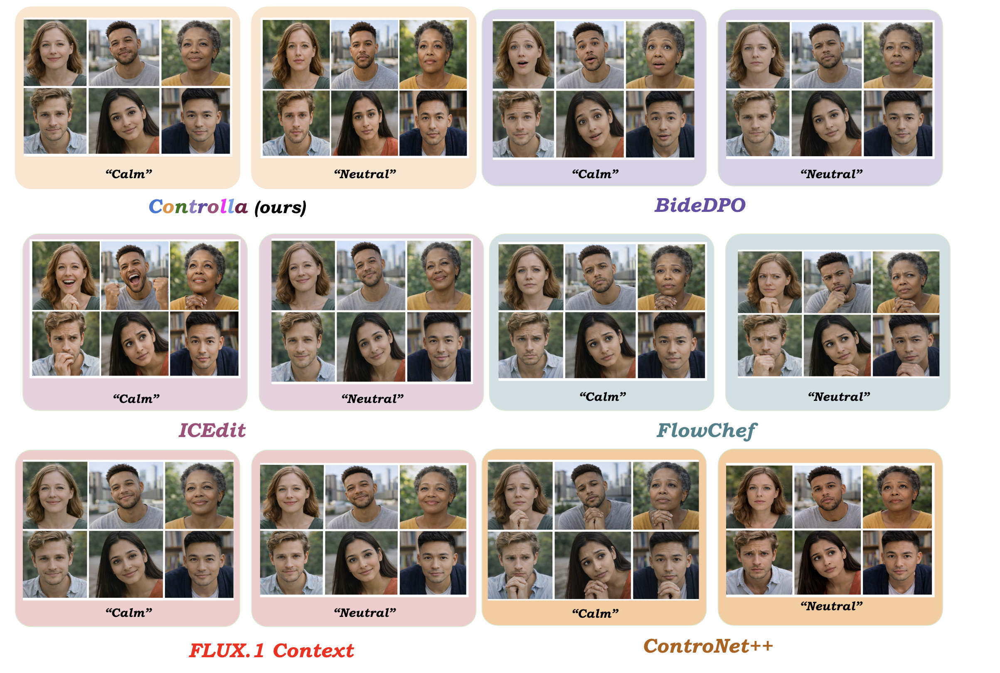
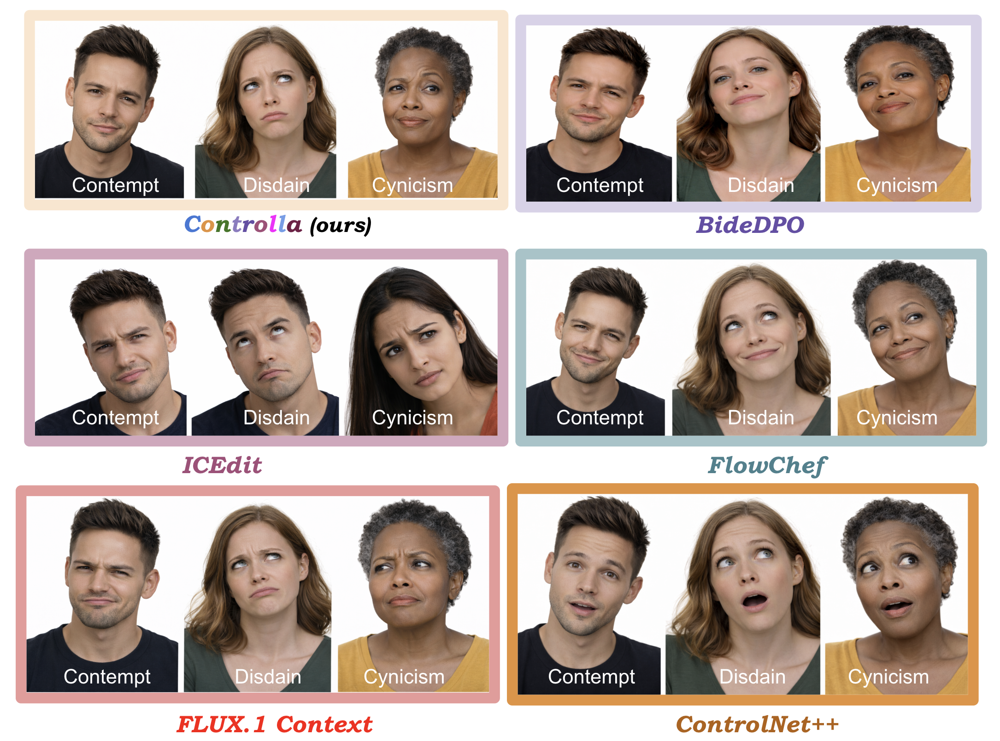
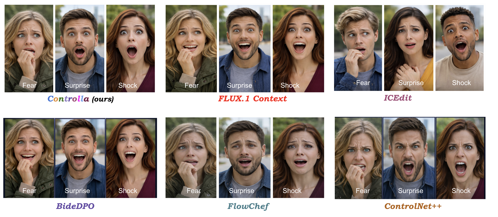
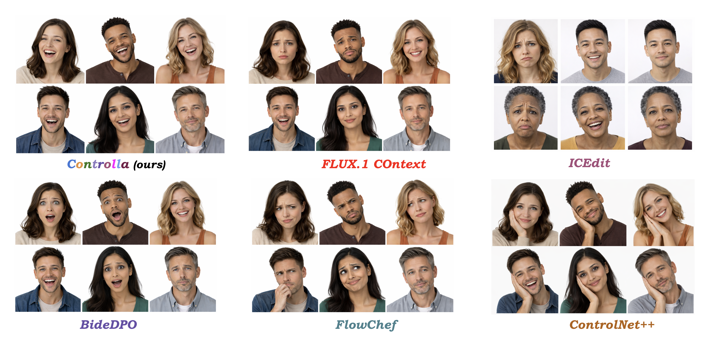
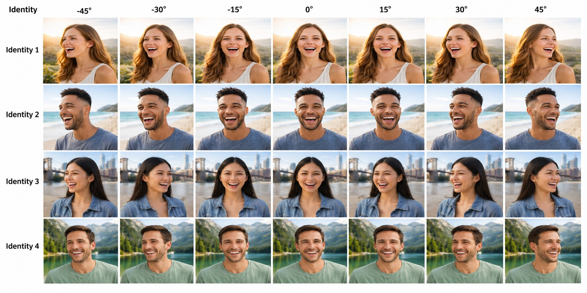
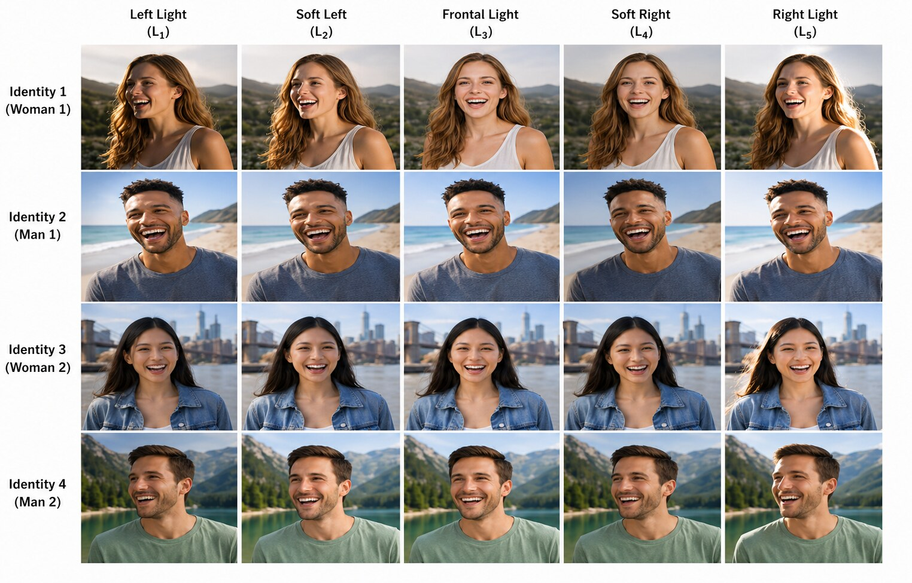
AffectHuman-43K is built for reference-grounded affective control. It emphasizes identity-disjoint splits, multimodal prompts, and expressive evaluation across eight emotion categories.
Large-scale dataset combining visual references with text and audio controls.
Reference identities are separated across training, validation, and test.
Tests happiness, sadness, anger, fear, surprise, disgust, contempt, and neutral.
This project page is under active development. Full paper, dataset, and benchmark details will be added soon.
All figures are sourced from the local data folder and renamed sequentially to match page usage.